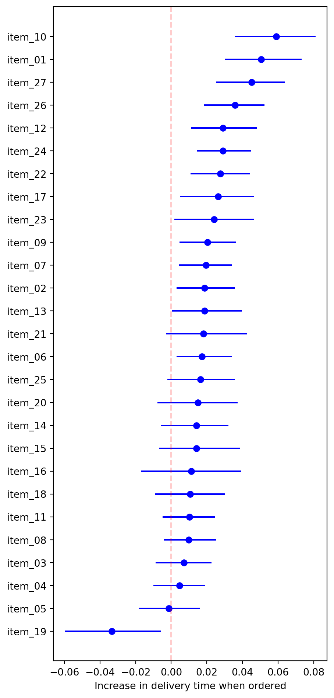
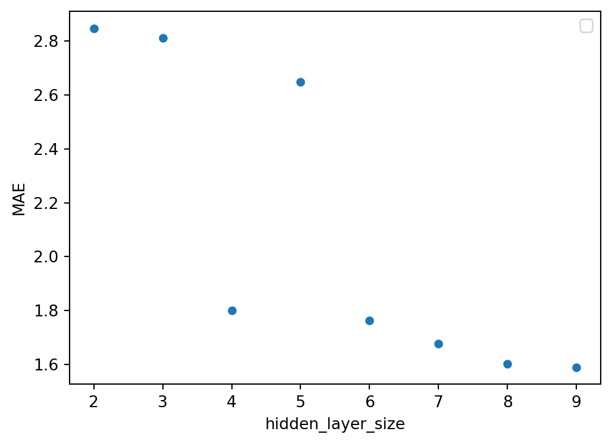

import pandas as pd
deliveries = pd.read_csv("data/deliveries.csv", index_col=0)
deliveries.head()2 The Whole Game
This chapter on the main website is a high-level tour of the modeling process. We’ll follow the same pattern here by analyzing the same data. But in Python! We won’t be able to reproduce everything, but at a high level you’ll see the same key points, and how common python packages work.
2.1 Load the Data
Start by loading the data;1 pandas is the standard dataframe package in python.2
| time_to_delivery | hour | day | distance | item_01 | item_02 | item_03 | item_04 | item_05 | item_06 | ... | item_18 | item_19 | item_20 | item_21 | item_22 | item_23 | item_24 | item_25 | item_26 | item_27 | |
|---|---|---|---|---|---|---|---|---|---|---|---|---|---|---|---|---|---|---|---|---|---|
| 1 | 16.1106 | 11.899 | Thu | 3.15 | 0 | 0 | 2 | 0 | 0 | 0 | ... | 0 | 0 | 0 | 0 | 0 | 0 | 0 | 0 | 0 | 0 |
| 2 | 22.9466 | 19.230 | Tue | 3.69 | 0 | 0 | 0 | 0 | 0 | 0 | ... | 1 | 0 | 0 | 0 | 0 | 0 | 0 | 0 | 0 | 0 |
| 3 | 30.2882 | 18.374 | Fri | 2.06 | 0 | 0 | 0 | 0 | 1 | 0 | ... | 0 | 0 | 1 | 0 | 0 | 0 | 1 | 0 | 0 | 0 |
| 4 | 33.4266 | 15.836 | Thu | 5.97 | 0 | 0 | 0 | 0 | 0 | 0 | ... | 0 | 0 | 0 | 0 | 0 | 0 | 0 | 0 | 0 | 1 |
| 5 | 27.2255 | 19.619 | Fri | 2.52 | 0 | 0 | 0 | 1 | 0 | 0 | ... | 0 | 0 | 0 | 0 | 0 | 0 | 0 | 0 | 0 | 1 |
5 rows × 31 columns
pandas provides plotting utilities, wrapping matplotlib:
from matplotlib import pyplot as plt
import numpy as np
fig, ax = plt.subplots(1, 2, sharey=True)
deliveries['time_to_delivery'].hist(bins=30, ax=ax[0], label="time to delivery")
deliveries['time_to_delivery'].apply(np.log).hist(bins=30, ax=ax[1], label="log(time to delivery)")
ax[0].set_xlabel("time_to_delivery")
ax[1].set_xlabel("log(time_to_delivery)")
ax[0].set_ylabel("count")
plt.show();
Reading from a CSV can’t intuit everything we’d like. The day column, the day of the week, was loaded as strings. It’ll be helpful in some places to cast them to a categorical type.
deliveries['day'] = (
deliveries['day']
.astype('category')
.cat.set_categories(
['Mon', 'Tue', 'Wed', 'Thu', 'Fri', 'Sat', 'Sun'],
ordered=True,
)
)2.2 Data Spending
sklearn provides train_test_split for simple splits, and several other cross-validation generators.
train_test_split doesn’t currently support stratifying on a continuous outcome. It’s probably not really needed here: with a large dataset randomness will generally work just fine. But we can stratify on the binned outcome3:
from sklearn.model_selection import train_test_split
delivery_train_val, delivery_test = train_test_split(
deliveries,
test_size=0.2,
random_state=42,
stratify=pd.qcut(deliveries['time_to_delivery'], 4),
)
delivery_train, delivery_val = train_test_split(
delivery_train_val,
test_size=0.2 / 0.8,
random_state=42,
stratify=pd.qcut(delivery_train_val['time_to_delivery'], 4),
)
print(len(delivery_train), len(delivery_val), len(delivery_test))6006 2003 20032.3 Exploratory Data Analysis
2.3.1 Distance and datetime features
Plotting smoothed trendlines isn’t so easy in pandas+matplotlib4; for now we avoid additional packages, relying on just the scatter plots in the top charts and adding a binned trend line for hour-vs-day interaction.
from matplotlib import pyplot as plt
fig, ax = plt.subplots(2, 2, figsize=(8, 6))
delivery_train.plot.scatter(
x='distance',
y='time_to_delivery',
alpha=0.1,
ax=ax[0, 0],
)
delivery_train.plot.scatter(
x='hour',
y='time_to_delivery',
alpha=0.1,
ax=ax[0, 1],
)
ax[0, 1].set_ylabel('')
delivery_train.boxplot(
column='time_to_delivery',
by='day',
ax=ax[1, 0],
)
ax[1, 0].set_title('')
# without fitting smoothers (another plotting package would help here),
# we'll bin the `hour` per `day` and line-plot the mean target
temp = delivery_train.copy()
temp['hour_bin'] = (
temp['hour']
.transform(pd.qcut, q=8)
.apply(lambda x: x.mid)
.astype('float')
)
grouped = (
temp
.groupby(['day', 'hour_bin'], observed=True)
['time_to_delivery']
.mean()
.reset_index('hour_bin')
.groupby('day', observed=True)
)
for day, data in grouped:
data.plot.line(x='hour_bin', y='time_to_delivery', label=day, ax=ax[1, 1])
plt.legend()
plt.tight_layout()
plt.suptitle('EDA plots')
plt.show()2.3.2 Bootstrap confidence intervals for item effects
Define the metric, make bootstrap samples and apply the metric:
def rel_increase_time_item(df, col):
"""Computes the relative increase to delivery time when
the item for column `col` is present."""
return (
df[['time_to_delivery']]
.groupby(df[col] > 0)
.mean()
.apply(lambda x: x[True] / x[False] - 1)
.item()
)
resample_stats = []
for _ in range(1001):
resample = delivery_train.sample(frac=1, replace=True)
stat = {}
for col in [col for col in resample.columns if col[:5] == "item_"]:
stat[col] = rel_increase_time_item(resample, col)
resample_stats.append(stat)
resample_stats = pd.DataFrame(resample_stats)
resample_stats.head()| item_01 | item_02 | item_03 | item_04 | item_05 | item_06 | item_07 | item_08 | item_09 | item_10 | ... | item_18 | item_19 | item_20 | item_21 | item_22 | item_23 | item_24 | item_25 | item_26 | item_27 | |
|---|---|---|---|---|---|---|---|---|---|---|---|---|---|---|---|---|---|---|---|---|---|
| 0 | 0.054103 | 0.017292 | 0.008682 | 0.015977 | 0.011972 | 0.043665 | 0.036624 | 0.012765 | 0.021645 | 0.062728 | ... | 0.013388 | -0.014932 | 0.014990 | 0.041886 | 0.034494 | 0.014592 | 0.015965 | 0.020034 | 0.020984 | 0.049516 |
| 1 | 0.050011 | 0.002393 | -0.001299 | 0.001282 | -0.010490 | 0.001923 | 0.038826 | 0.007291 | 0.023146 | 0.066698 | ... | 0.015118 | -0.019182 | 0.016508 | 0.022857 | 0.022154 | 0.016174 | 0.032608 | 0.031186 | 0.041065 | 0.037091 |
| 2 | 0.064525 | 0.021489 | 0.012805 | -0.001155 | -0.006744 | 0.017456 | 0.021495 | 0.013350 | 0.010477 | 0.079519 | ... | 0.026898 | -0.017919 | -0.000028 | 0.041610 | 0.047812 | 0.036134 | 0.029307 | 0.007808 | 0.032878 | 0.048277 |
| 3 | 0.066122 | 0.017269 | 0.003352 | 0.004768 | -0.001041 | 0.039762 | 0.029516 | 0.018215 | 0.035621 | 0.055254 | ... | 0.025648 | -0.043171 | 0.032758 | 0.003911 | 0.033549 | 0.038567 | 0.029270 | 0.018654 | 0.045651 | 0.044264 |
| 4 | 0.052150 | 0.008242 | -0.000876 | 0.005176 | -0.016159 | 0.004438 | 0.003848 | 0.013680 | 0.013857 | 0.046125 | ... | 0.012379 | -0.043789 | 0.017621 | 0.014498 | 0.017912 | 0.019515 | 0.021430 | 0.022849 | 0.032541 | 0.029674 |
5 rows × 27 columns
Define the confidence intervals:
ci = resample_stats.apply(np.percentile, q=[5, 95])
ci.index = ['lower', 'upper']
ci = ci.T
ci['sample'] = [
rel_increase_time_item(delivery_train, col)
for col in delivery_train.columns if col[:5] == "item_"
]
ci = ci.sort_values('sample')Plot:
fig = plt.figure(figsize=(5, 12))
for y, (col, stats) in enumerate(ci.iterrows()):
plt.plot([stats['lower'], stats['upper']], [y, y], c='b')
plt.plot(stats['sample'], y, 'bo')
plt.axvline(0, ls='--', c='r', alpha=0.2)
plt.yticks(np.arange(len(ci)), labels=ci.index)
plt.xlabel("Increase in delivery time when ordered")
plt.show();

2.4 Model Development
sklearn uses separate parameter slots for its independent and dependent variables, so
y_var = 'time_to_delivery'
X_train = delivery_train.drop(columns=y_var)
X_val = delivery_val.drop(columns=y_var)
X_test = delivery_test.drop(columns=y_var)
y_train = delivery_train[y_var]
y_val = delivery_val[y_var]
y_test = delivery_test[y_var]2.4.1 Linear model
We use sklearn’s OneHotEncoder to produce indicator columns (a.k.a. dummy variables, one-hot encoding) for the day variable. (pandas also has make_dummies, but this requires more work with the validation and test sets (and production), so we prefer to keep everything in sklearn.)
For splines, we have SplineTransformer.
For interaction terms, there’s not a direct sklearn transformer. We’ll use a FunctionTransformer and define the transformation function directly.5
To apply preprocessors to different subsets of columns, we use ColumnTransformer.
from sklearn import set_config
from sklearn.pipeline import Pipeline
from sklearn.compose import ColumnTransformer
from sklearn.preprocessing import OneHotEncoder, SplineTransformer, FunctionTransformer
set_config(transform_output="pandas")
ohe = OneHotEncoder(
sparse_output=False,
handle_unknown='ignore',
)
spl = SplineTransformer(knots='quantile')
def interactions(X):
for day_col in [col for col in X.columns if col[:4] == 'day_']:
for hour_basis in [col for col in X.columns if col[:5] == 'hour_']:
X[f'{day_col}*{hour_basis}'] = X[day_col] * X[hour_basis]
return X
int_tfm = FunctionTransformer(interactions, check_inverse=False)
preproc_lr = Pipeline([
('step_1', ColumnTransformer(
[
('ohe', ohe, ['day']),
('spl', spl, ['hour']),
],
remainder='passthrough',
verbose_feature_names_out=False,
)
),
('interact', int_tfm),
])
preproc_lrPipeline(steps=[('step_1',
ColumnTransformer(remainder='passthrough',
transformers=[('ohe',
OneHotEncoder(handle_unknown='ignore',
sparse_output=False),
['day']),
('spl',
SplineTransformer(knots='quantile'),
['hour'])],
verbose_feature_names_out=False)),
('interact',
FunctionTransformer(check_inverse=False,
func=<function interactions at 0x00000162F512AFC0>))])In a Jupyter environment, please rerun this cell to show the HTML representation or trust the notebook. On GitHub, the HTML representation is unable to render, please try loading this page with nbviewer.org.
Pipeline(steps=[('step_1',
ColumnTransformer(remainder='passthrough',
transformers=[('ohe',
OneHotEncoder(handle_unknown='ignore',
sparse_output=False),
['day']),
('spl',
SplineTransformer(knots='quantile'),
['hour'])],
verbose_feature_names_out=False)),
('interact',
FunctionTransformer(check_inverse=False,
func=<function interactions at 0x00000162F512AFC0>))])ColumnTransformer(remainder='passthrough',
transformers=[('ohe',
OneHotEncoder(handle_unknown='ignore',
sparse_output=False),
['day']),
('spl', SplineTransformer(knots='quantile'),
['hour'])],
verbose_feature_names_out=False)['day']
OneHotEncoder(handle_unknown='ignore', sparse_output=False)
['hour']
SplineTransformer(knots='quantile')
passthrough
FunctionTransformer(check_inverse=False,
func=<function interactions at 0x00000162F512AFC0>)All sklearn estimators (both transformers and model objects) implement a fit method that learns statistics/parameters from the data. Transformers provide transform for applying their transformations to data (whether training or test data; for training data, fit_transform is available and most often means just fit then transform). Model objects provide predict (and probabilistic classifiers provide predict_proba). There are many other methods and attributes, but these will get us through the rest of this chapter.
Let’s see what the fully preprocessed data looks like.
preproc_lr.fit_transform(X_train)| day_Fri | day_Mon | day_Sat | day_Sun | day_Thu | day_Tue | day_Wed | hour_sp_0 | hour_sp_1 | hour_sp_2 | ... | day_Tue*hour_sp_4 | day_Tue*hour_sp_5 | day_Tue*hour_sp_6 | day_Wed*hour_sp_0 | day_Wed*hour_sp_1 | day_Wed*hour_sp_2 | day_Wed*hour_sp_3 | day_Wed*hour_sp_4 | day_Wed*hour_sp_5 | day_Wed*hour_sp_6 | |
|---|---|---|---|---|---|---|---|---|---|---|---|---|---|---|---|---|---|---|---|---|---|
| 5732 | 0.0 | 0.0 | 0.0 | 1.0 | 0.0 | 0.0 | 0.0 | 0.000000 | 0.000000 | 0.000000 | ... | 0.0 | 0.0 | 0.0 | 0.0 | 0.0 | 0.0 | 0.0 | 0.0 | 0.0 | 0.0 |
| 4480 | 0.0 | 0.0 | 0.0 | 1.0 | 0.0 | 0.0 | 0.0 | 0.006219 | 0.294690 | 0.612966 | ... | 0.0 | 0.0 | 0.0 | 0.0 | 0.0 | 0.0 | 0.0 | 0.0 | 0.0 | 0.0 |
| 7337 | 1.0 | 0.0 | 0.0 | 0.0 | 0.0 | 0.0 | 0.0 | 0.000000 | 0.000000 | 0.015240 | ... | 0.0 | 0.0 | 0.0 | 0.0 | 0.0 | 0.0 | 0.0 | 0.0 | 0.0 | 0.0 |
| 8762 | 0.0 | 0.0 | 1.0 | 0.0 | 0.0 | 0.0 | 0.0 | 0.000000 | 0.000000 | 0.000000 | ... | 0.0 | 0.0 | 0.0 | 0.0 | 0.0 | 0.0 | 0.0 | 0.0 | 0.0 | 0.0 |
| 931 | 1.0 | 0.0 | 0.0 | 0.0 | 0.0 | 0.0 | 0.0 | 0.000000 | 0.000000 | 0.008700 | ... | 0.0 | 0.0 | 0.0 | 0.0 | 0.0 | 0.0 | 0.0 | 0.0 | 0.0 | 0.0 |
| ... | ... | ... | ... | ... | ... | ... | ... | ... | ... | ... | ... | ... | ... | ... | ... | ... | ... | ... | ... | ... | ... |
| 2742 | 0.0 | 0.0 | 0.0 | 0.0 | 1.0 | 0.0 | 0.0 | 0.035889 | 0.480137 | 0.465214 | ... | 0.0 | 0.0 | 0.0 | 0.0 | 0.0 | 0.0 | 0.0 | 0.0 | 0.0 | 0.0 |
| 8232 | 0.0 | 0.0 | 0.0 | 0.0 | 1.0 | 0.0 | 0.0 | 0.000036 | 0.120192 | 0.637531 | ... | 0.0 | 0.0 | 0.0 | 0.0 | 0.0 | 0.0 | 0.0 | 0.0 | 0.0 | 0.0 |
| 6660 | 0.0 | 0.0 | 0.0 | 0.0 | 1.0 | 0.0 | 0.0 | 0.002236 | 0.227557 | 0.640921 | ... | 0.0 | 0.0 | 0.0 | 0.0 | 0.0 | 0.0 | 0.0 | 0.0 | 0.0 | 0.0 |
| 68 | 1.0 | 0.0 | 0.0 | 0.0 | 0.0 | 0.0 | 0.0 | 0.083970 | 0.588468 | 0.325075 | ... | 0.0 | 0.0 | 0.0 | 0.0 | 0.0 | 0.0 | 0.0 | 0.0 | 0.0 | 0.0 |
| 8066 | 0.0 | 0.0 | 0.0 | 0.0 | 1.0 | 0.0 | 0.0 | 0.000000 | 0.004694 | 0.295272 | ... | 0.0 | 0.0 | 0.0 | 0.0 | 0.0 | 0.0 | 0.0 | 0.0 | 0.0 | 0.0 |
6006 rows × 91 columns
We can put that frame directly into a model, or again wrap the preprocessor in a pipeline with the model (which will make predicting slightly easier, as the transformations will happen under the hood).
from sklearn.linear_model import LinearRegression
from sklearn.metrics import mean_absolute_error
pipe_lr = Pipeline([
('preproc', preproc_lr),
('linear_reg', LinearRegression()),
])
pipe_lr.fit(X_train, y_train)
y_pred = pipe_lr.predict(X_val)
mean_absolute_error(y_true=y_val, y_pred=y_pred)1.6421489340208437Take a look at a calibration plot, the actual-vs-predicted values:
from sklearn.metrics import PredictionErrorDisplay
PredictionErrorDisplay.from_predictions(
y_true=y_val,
y_pred=y_pred,
kind='actual_vs_predicted',
scatter_kwargs={'alpha': 0.1},
)2.4.2 Random forest
sklearn doesn’t have a model-based recursive partitioning like cubist; there is a different python package just for that, but to stick to sklearn for now let’s fit instead a random forest. Random forests build binary trees like cubist, but with constant predictions from each leaf instead of the linear models that cubist produces. To reach similar performance then, we’ll want deeper trees.
As in the book, this tree-based model doesn’t necessitate as much transformation to perform well. However, at time of writing sklearn’s random forest doesn’t handle categorical features, so we’ll need to one-hot encode day still.
And intuitively the number of items ought to also be important; while the linear model gets that for free (just the sum of the item_ columns), and a tree can approximate it arbitrarily closely, it can be beneficial to the learning procedure to expose this as a feature directly. We can add that in the pipeline as another FunctionTransformer.
from sklearn.ensemble import RandomForestRegressor
from sklearn.preprocessing import FunctionTransformer
from sklearn.compose import make_column_selector
rf = RandomForestRegressor(
max_depth=15,
n_estimators=100,
random_state=42,
)
def item_count(X):
X['item_count'] = X.sum(axis=1)
return X
preproc_rf = ColumnTransformer(
[
('ohe', ohe, ['day']),
('items', FunctionTransformer(item_count), make_column_selector(pattern='item_*')),
],
remainder='passthrough',
verbose_feature_names_out=False,
)
pipe_rf = Pipeline([
('preproc', preproc_rf),
('rand_forest', rf),
])
pipe_rf.fit(X_train, y_train)
y_pred = pipe_rf.predict(X_val)
mean_absolute_error(y_true=y_val, y_pred=y_pred)1.4992085511625766Adding the item count appears (on the validation set) to have helped a bit. Taking into account our analysis of item presence, we might modify the count to exclude item 19, or increase the weight on item 10, etc. But at that point the trees might already be making the relevant modifications.
2.4.3 Neural network
sklearn isn’t the best package for neural networks, but it does provide a simple implementation:
from sklearn.neural_network import MLPRegressor
nn = MLPRegressor(
max_iter=500,
learning_rate_init=0.01,
random_state=42,
)As in the book, we won’t get into the large space of hyperparameters, and just tune the number of neurons in a single hidden layer. sklearn offers GridSearchCV for tuning hyperparameters in a grid style, or RandomizedSearchCV for a random search. Other packages offer other strategies.
The tuners in sklearn use k-fold cross-validation by default. While it’s possible to tune using a fixed validation set, we’ll just use the k-fold splitting of the training set to score hyperparameters, and score the best hyperparameter against our validation set.
from sklearn.model_selection import GridSearchCV
from sklearn.preprocessing import StandardScaler
preproc_nn = ColumnTransformer(
[('ohe', ohe, ['day'])],
remainder=StandardScaler(),
)
pipe_nn = Pipeline([
('preproc', preproc_nn),
('neural_net', nn),
])
# setting hyperparameters for a pipeline
# uses <step_name>__<parameter>
params = {
'neural_net__hidden_layer_sizes': [(k,) for k in range(2, 10)],
}
search = GridSearchCV(
estimator=pipe_nn,
param_grid=params,
cv=3,
scoring='neg_mean_absolute_error',
n_jobs=3,
)
search.fit(X_train, y_train)GridSearchCV(cv=3,
estimator=Pipeline(steps=[('preproc',
ColumnTransformer(remainder=StandardScaler(),
transformers=[('ohe',
OneHotEncoder(handle_unknown='ignore',
sparse_output=False),
['day'])])),
('neural_net',
MLPRegressor(learning_rate_init=0.01,
max_iter=500,
random_state=42))]),
n_jobs=3,
param_grid={'neural_net__hidden_layer_sizes': [(2,), (3,), (4,),
(5,), (6,), (7,),
(8,), (9,)]},
scoring='neg_mean_absolute_error')In a Jupyter environment, please rerun this cell to show the HTML representation or trust the notebook. On GitHub, the HTML representation is unable to render, please try loading this page with nbviewer.org.
GridSearchCV(cv=3,
estimator=Pipeline(steps=[('preproc',
ColumnTransformer(remainder=StandardScaler(),
transformers=[('ohe',
OneHotEncoder(handle_unknown='ignore',
sparse_output=False),
['day'])])),
('neural_net',
MLPRegressor(learning_rate_init=0.01,
max_iter=500,
random_state=42))]),
n_jobs=3,
param_grid={'neural_net__hidden_layer_sizes': [(2,), (3,), (4,),
(5,), (6,), (7,),
(8,), (9,)]},
scoring='neg_mean_absolute_error')Pipeline(steps=[('preproc',
ColumnTransformer(remainder=StandardScaler(),
transformers=[('ohe',
OneHotEncoder(handle_unknown='ignore',
sparse_output=False),
['day'])])),
('neural_net',
MLPRegressor(learning_rate_init=0.01, max_iter=500,
random_state=42))])ColumnTransformer(remainder=StandardScaler(),
transformers=[('ohe',
OneHotEncoder(handle_unknown='ignore',
sparse_output=False),
['day'])])['day']
OneHotEncoder(handle_unknown='ignore', sparse_output=False)
StandardScaler()
MLPRegressor(learning_rate_init=0.01, max_iter=500, random_state=42)
By default, the hyperparameter(s) with the highest score are selected as best_params_, and a new model is trained with that setting on the entire training set. That model object is used when calling search.predict below.
y_pred = search.predict(X_val)
mean_absolute_error(y_true=y_val, y_pred=y_pred)1.5896399846317644To find out more about the search, we have a look at the attribute cv_results_:
cv_results_frame = pd.DataFrame(search.cv_results_)
cv_results_frame| mean_fit_time | std_fit_time | mean_score_time | std_score_time | param_neural_net__hidden_layer_sizes | params | split0_test_score | split1_test_score | split2_test_score | mean_test_score | std_test_score | rank_test_score | |
|---|---|---|---|---|---|---|---|---|---|---|---|---|
| 0 | 2.053400 | 0.386802 | 0.026926 | 0.004126 | (2,) | {'neural_net__hidden_layer_sizes': (2,)} | -2.900021 | -2.968643 | -2.878729 | -2.915798 | 0.038365 | 8 |
| 1 | 2.036068 | 0.267483 | 0.029154 | 0.003246 | (3,) | {'neural_net__hidden_layer_sizes': (3,)} | -2.891706 | -2.955277 | -2.898843 | -2.915275 | 0.028435 | 7 |
| 2 | 6.717807 | 0.391012 | 0.022901 | 0.001156 | (4,) | {'neural_net__hidden_layer_sizes': (4,)} | -2.813088 | -2.892844 | -2.797502 | -2.834478 | 0.041758 | 6 |
| 3 | 2.319414 | 0.103762 | 0.027622 | 0.002060 | (5,) | {'neural_net__hidden_layer_sizes': (5,)} | -1.890891 | -3.093606 | -2.883853 | -2.622783 | 0.524563 | 5 |
| 4 | 2.758142 | 0.920328 | 0.028804 | 0.003179 | (6,) | {'neural_net__hidden_layer_sizes': (6,)} | -1.813454 | -1.834016 | -1.823665 | -1.823712 | 0.008395 | 3 |
| 5 | 3.745881 | 0.316166 | 0.037313 | 0.007820 | (7,) | {'neural_net__hidden_layer_sizes': (7,)} | -1.826556 | -1.791720 | -1.811093 | -1.809790 | 0.014252 | 2 |
| 6 | 4.488394 | 1.265043 | 0.026785 | 0.004012 | (8,) | {'neural_net__hidden_layer_sizes': (8,)} | -2.854357 | -1.600081 | -1.799832 | -2.084757 | 0.550265 | 4 |
| 7 | 3.707190 | 0.577736 | 0.022616 | 0.003156 | (9,) | {'neural_net__hidden_layer_sizes': (9,)} | -1.700333 | -1.715514 | -1.662616 | -1.692821 | 0.022239 | 1 |
Plotting from that dataframe:
# extract the numeric hidden layer size
# from the tuple-typed hyperparameter
cv_results_frame['hidden_layer_size'] = cv_results_frame[
'param_neural_net__hidden_layer_sizes'
].apply(lambda x: x[0])
# convert back from scorer neg_mae to mae
cv_results_frame[[f'split{i}_mae' for i in range(search.cv)]] = (
- cv_results_frame[[f'split{i}_test_score' for i in range(search.cv)]]
)
from matplotlib import colormaps
colors = colormaps['tab10'].colors
fig, ax = plt.subplots(1)
for i in range(search.cv):
cv_results_frame.plot.scatter(
x='hidden_layer_size',
y=f'split{i}_mae',
label=f'split {i}',
color=colors[i],
ax=ax,
)
plt.legend()
ax.set_ylabel("MAE")
plt.show();

We’ve opted to use the comma-separated values (CSV) format because that’s easily loaded in many programs; there are other formats that hold more information (like column data types) and are more efficient.↩︎
but again, fancier things exist, perhaps most notably
polars↩︎the latter have expressed concern over making up information as well as possibly exploding the number of parameters needed for different uses↩︎
We could also use
PolynomialFeatureshere, with degree 2 andinteraction_only=Trueto prevent \(\mathrm{feature}^2\) terms; that would include things like interactions of Monday with Wednesday, or two spline bases, which we could probably clean up downstream, but this will be a little nicer.↩︎